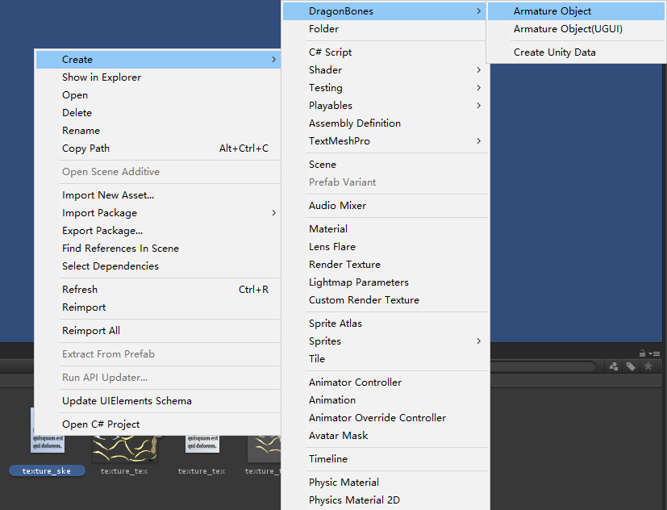
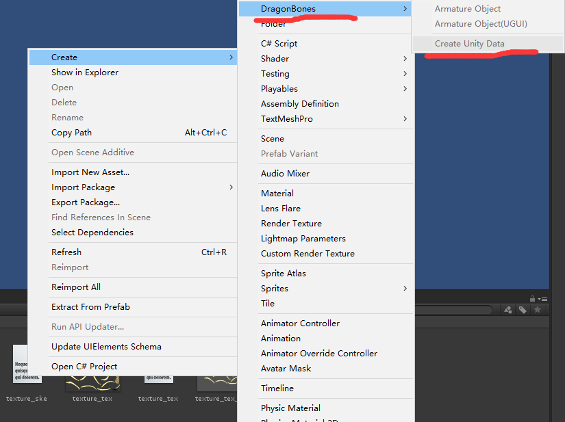
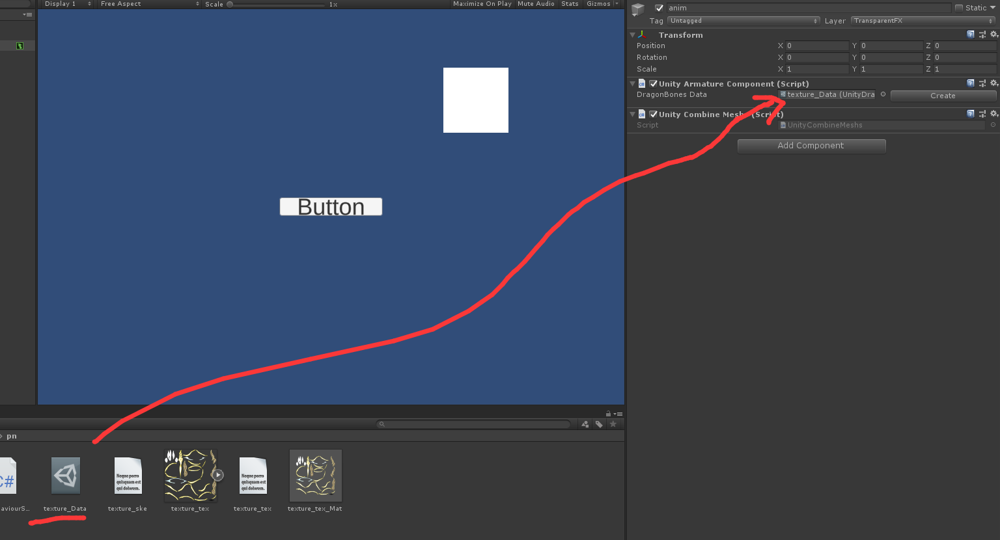
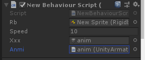

最近跑路的事情稳了，又拿出2019年设计的小游戏草案在那里改。找文章发现DragonBones骨骼可以用来unity中使用。但项目需求使用时，踩了很多坑。
导入插件
在github(https://github.com/DragonBones/DragonBonesCSharp) 下载插件.
然后：
- 创建一个 Unity 项目或使用上述示例项目。
- 分别复制 DragonBones 公共库源码、DragonBones Unity 库源码、第三方库源码 中的所有文件夹和文件到项目的 Assets/Scripts 文件夹下。
- 运行项目。
确保项目结构如下:
1 | Your project |
素材导入
图像界面导入
unity图像界面导入DragonBones骨骼比较简单。分为Data数据导入和直接法。
直接导入
在插件导入后，我们就点击右键ske文件，点击DragonBones中Armature Object,可以生成DragonBones骨骼动画对象。

Data数据
在插件导入后，我们就点击右键ske文件，点击DragonBones中Create Unity Data,可以生成data文件。

在把文件拖入DragonBones对象里。

代码导入
参照官方demo教程–HelloDragonBones.cs改动的，纯代码导入
1 | using System.Collections; |
在这里要注意的是UnityFactory.factory.BuildArmatureComponent()函数的参数与ske文件中的armature属性里的name的值相关，两者要一致。
同时，如果是高版本素材推荐用scheme1导入，低版本用scheme2。否则，代码导入后有蜜汁bug。
另外代码导入时，确保正确生成了mat文件，否则也有蜜汁bug。官方代码里先读取文件再判断是否生成orw。。。。
用代码获得骨骼动画对象
我们在导入unity后,我们可以通过UnityArmatureComponent控件来管理我们DragonBones骨骼动画。
我们可以GETcomponent来获取我们的DragonBones骨骼动画对象：
1 | public DragonBones.UnityArmatureComponent anmi; |
也可以直接使用拖拽法

用代码控制骨骼动画播放
官方提供的获得控制骨骼动画播放与播放状态属性的API，这些与播放相关的API多数放在animation属性下。
具体API简略整理如下：
通过指定的动画配置来播放动画
1 | public AnimationState PlayConfig(AnimationConfig animationConfig) |
通过指定的动画配置来播放动画。 该 API 仍在实验阶段，使用时可能遭遇 bug 或稳定性或兼容性问题。
参数：
animationConfig：是指动画配置。
播放指定动画
1 | public AnimationState Play(string animationName = null, int playTimes = -1) |
播放指定动画，并设置循环次数。
参数:
animationName:运行动画名称。
playTimes:循环次数 [-1: 使用动画数据默认值, 0: 无限循环播放, [1~N]: 循环播放 N 次] （默认: -1）示例：
1 | armature.animation.play("walk"); |
淡入播放指定的动画
1 | public AnimationState FadeIn(string animationName, float fadeInTime = -1.0f, int playTimes = -1, |
FadeIn()淡入播放指定的动画。
参数：
animationName：动画数据名称。
fadeInTime:淡入时间。 [-1: 使用动画数据默认值, [0~N]: 淡入时间 (以秒为单位)] （默认: -1）
playTimes: 播放次数。 [-1: 使用动画数据默认值, 0: 无限循环播放, [1~N]: 循环播放 N 次] （默认: -1）
layer:混合图层，图层高的动画状态会优先获取混合权重，当混合权重分配总和超过 1.0 时，剩余的动画状态将不能再获得权重分配。 （默认: 0）
group 混合组名称，该属性通常用来指定多个动画状态混合时的相互替换关系。 （默认: null）
fadeOutMode:淡出模式，该属性通常用来指定多个动画状态混合时的相互替换模式。 （默认: AnimationFadeOutMode.SameLayerAndGroup）
返回值：
播放的状态。
PS:淡出模式的具体模式有:
1 | AnimationFadeOutMode.None //不淡出任何的动画状态，值同等于0 |
示例：
1 | armature.animation.fadeIn("walk", 0.3, 0, 0, "normalGroup").resetToPose = false; |
指定时间开始播放指定动画
1 | public AnimationState GotoAndPlayByTime(string animationName, float time = 0.0f, int playTimes = -1) |
GotoAndPlayByTime()-指定时间开始播放.
参数：
animationName- 动画数据名称。
time- 播放开始的时间。 (以秒为单位)
playTimes- 循环播放次数。 [-1: 使用动画数据默认值, 0: 无限循环播放, [1~N]: 循环播放 N 次] （默认: -1）
返回值：
播放的动画状态。
指定帧开始播放指定动画
1 | public AnimationState GotoAndPlayByFrame(string animationName, uint frame = 0, int playTimes = -1) |
GotoAndPlayByFrame从指定帧开始播放指定的动画
参数:
animationName- 动画数据名称。
frame- 播放开始的帧数。
playTimes- 播放次数。 [-1: 使用动画数据默认值, 0: 无限循环播放, [1~N]: 循环播放 N 次] （默认: -1）
返回值：
播放的动画状态。
指定进度开始播放指定的动画
1 | public AnimationState GotoAndPlayByProgress(string animationName, float progress = 0.0f, int playTimes = -1) |
GotoAndPlayByProgress指定进度开始播放指定的动画。
参数：
animationName 动画数据名称。
progress- 开始播放的进度。
playTimes- 播放次数。 [-1: 使用动画数据默认值, 0: 无限循环播放, [1~N]: 循环播放 N 次] （默认: -1）
返回值：
returns-播放的动画状态。
指定时间停止指定动画播放
1 | public AnimationState GotoAndStopByTime(string animationName, float time = 0.0f) |
在指定时间停止指定动画播放。
参数：
animationName- 动画数据名称。
time- 停止的时间。 (以秒为单位)
返回值：播放的动画状态。
指定帧停止指定动画的播放
1 | public AnimationState GotoAndStopByFrame(string animationName, uint frame = 0) |
在指定帧停止指定动画的播放
参数：
animationName- 动画数据名称.
frame- 停止的帧数。
返回值：
播放的动画状态。
指定的进度停止指定的动画播放
1 | public AnimationState GotoAndStopByProgress(string animationName, float progress = 0.0f) |
指定的进度停止指定的动画播放
参数：
animationName- 动画数据名称。
progress- 停止进度。
返回状态：播放的动画状态。
获取指定的动画状态
1 | public AnimationState GetState(string animationName) |
获取指定的动画状态
参数：
animationName- 动画状态名称。
示例：
1 | armature.animation.play("walk"); |
检查是否包含指定的动画数据
1 | public bool HasAnimation(string animationName) |
HasAnimation()检查是否包含指定的动画数据
参数：
animationName- 动画数据名称。
获取所有的动画状态
1 | public List<AnimationState> GetStates() |
GetStates() 获取所有的动画状态.
检查是否有动画状态正在播放
1 | public bool isPlaying |
示例：
1 | armature.animation.isPlaying |
为True 表在播放，为flase则未在播放。
检查是否所有的动画状态均已播放完毕
1 | public bool isCompleted |
示例：
1 | armature.animation.isCompleted |
上一个播放的动画状态名称
1 | public string lastAnimationName |
所有动画数据的名称
1 | public List<string> animationNames |
所有的动画数据
1 | public Dictionary<string, AnimationData> animations |
一个可以快速使用的动画配置实例
1 | public AnimationConfig animationConfig |
上一个播放的动画状态
1 | public AnimationState lastAnimationState |
替换骨骼动画
Assets\DragonBones\Editor\UnityEditor.cs 里用执行替换骨骼动画的函数–ChangeDragonBonesData
拷贝Assets\DragonBones\Editor\UnityEditor.cs到目录Assets\DragonBones\Scripts\animation\
1 | public static bool ChangeDragonBonesData(UnityArmatureComponent _armatureComponent, TextAsset dragonBoneJSON) |
ChangeDragonBonesData的一个参数时要替换骨骼与动画UnityArmatureComponent控件，二个是替换成的dragonBoneJSON数据。
示例：
1 |
|
参考文献
https://github.com/DragonBones/DragonBonesCSharp
https://github.com/DragonBones/DragonBonesCSharp/blob/master/README-zh_CN.md
https://github.com/DragonBones/DragonBonesCSharp/blob/master/Unity/README-zh_CN.md
1 |